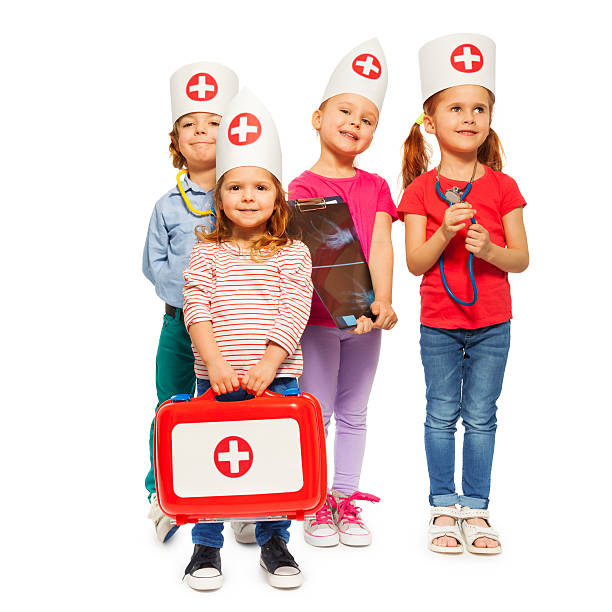

Bandages & dressing:
1.Adhesive bandages (Band-Aid or similar brand); assorted sizes
2.Aluminum finger splints
3.Elastic (ACE) bandage for wrapping wrist, ankle, knee, and elbow injuries
4.Eye shield, pads, and bandages
Home health equipment:
1.Blue baby bulb or turkey baster suction device
2.Disposable, instant ice bags
3.Face mask to reduce wound contamination risk
4.First-aid manual
5.Hand sanitizer
6.Latex or non-latex gloves to reduce contamination risk
Medicine for cuts and injuries:
1.Antiseptic solution or wipes, such as hydrogen peroxide, povidone-iodine, or chlorhexidine
2.Antibiotic ointment, such as bacitracin, polysporin, or mupirocin
3.Sterile eyewash, such as contact lens saline solution